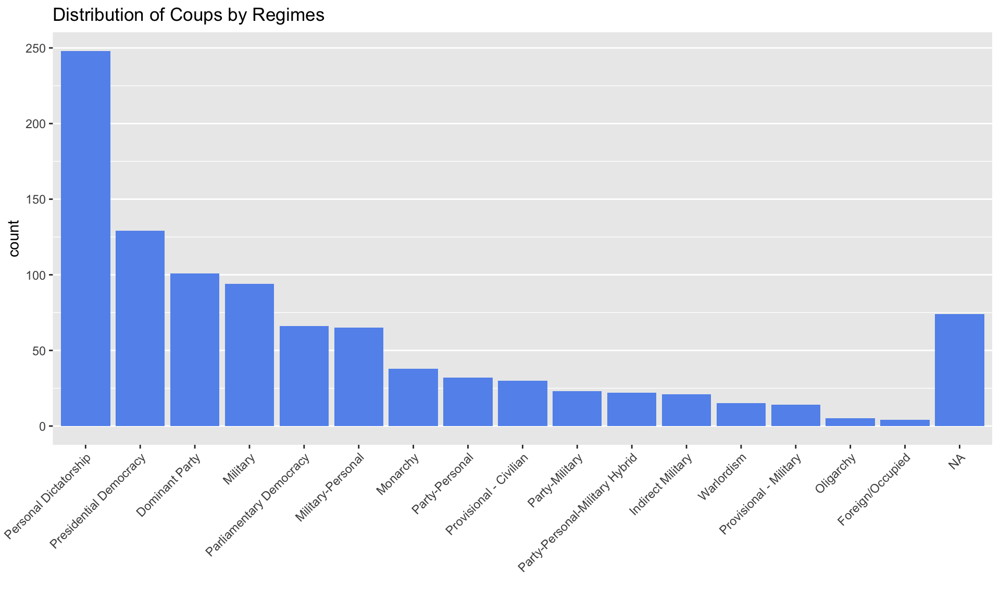
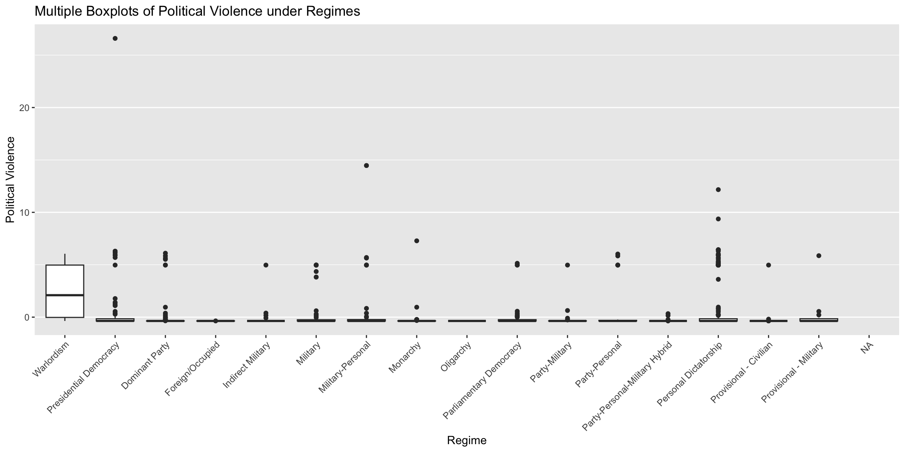
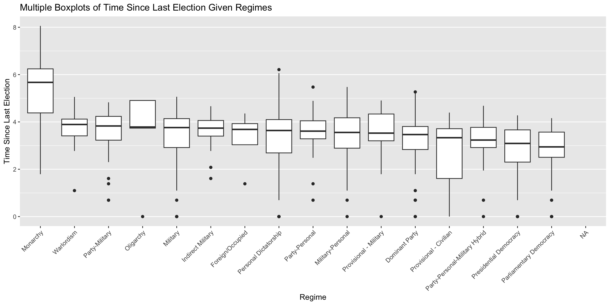
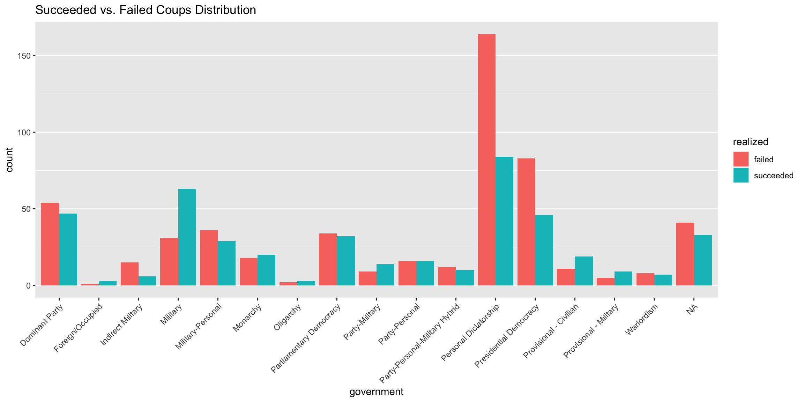
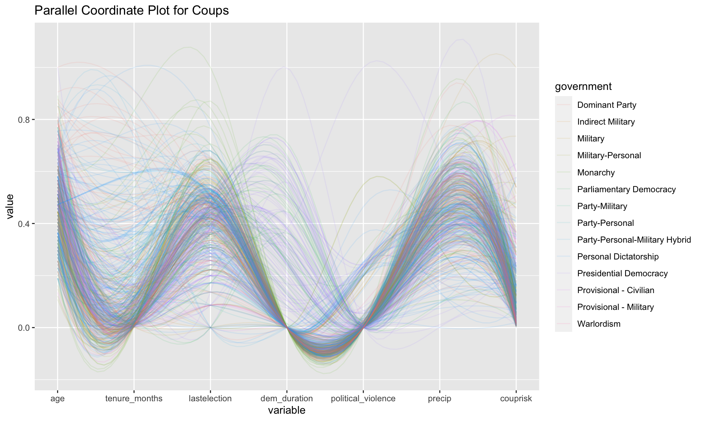
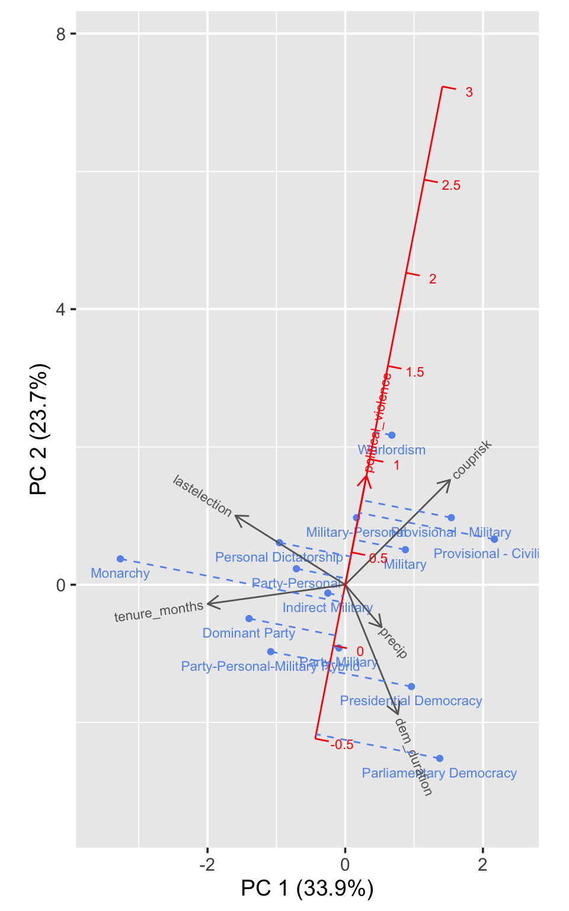
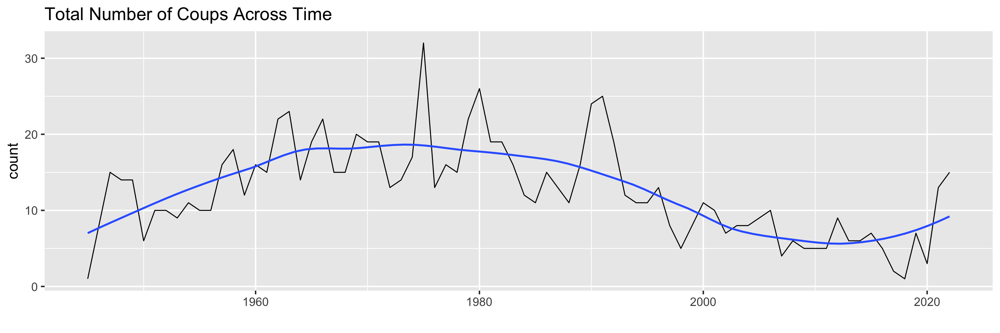
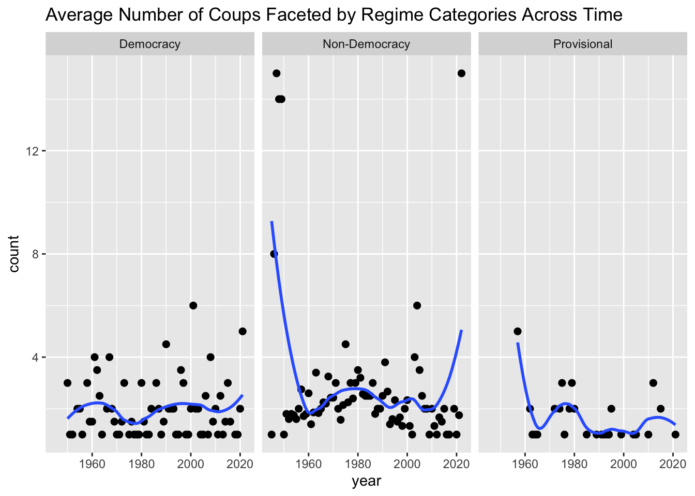
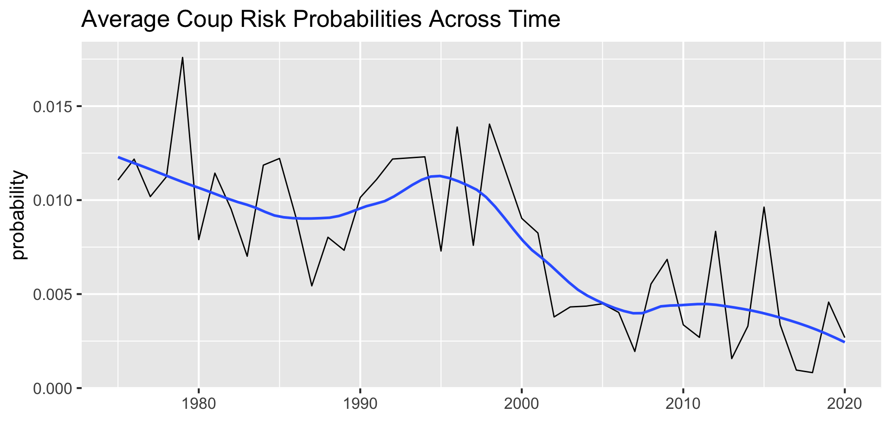
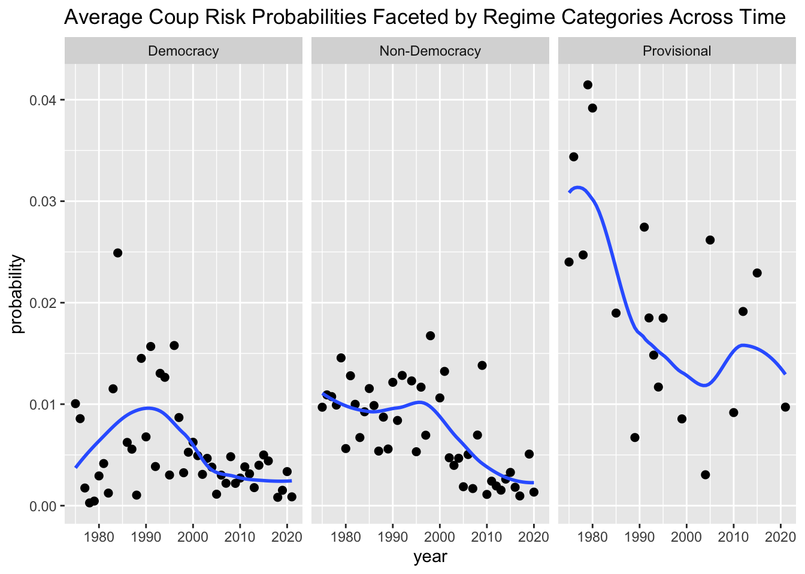

Code
# dependencies
library(ggplot2)
library(GGally)
library(dplyr)
library(parcoords)
library(forcats)
library(plotly)
library(redav)
library(lubridate)
library(ggridges)
# load data
joined <- read.csv("./data/merged/coup_data.csv")# dependencies
library(ggplot2)
library(GGally)
library(dplyr)
library(parcoords)
library(forcats)
library(plotly)
library(redav)
library(lubridate)
library(ggridges)
# load data
joined <- read.csv("./data/merged/coup_data.csv")Can the regime type of a country infer whether it will encounter a coup in the future? To answer this question, we come up with some factors that relate to the occurrence of coup events using common sense, and then discuss the relationship between regime types and these factors. Eventually, we shall see similarities and differences among these different relations.
To start with, it would be straightforward to think that - if countries under some form of government experience more coup incidents, then the regime type is more likely to incur coup events. Provided that, we see the distribution of coups group by regime types.
joined %>%
group_by(government) %>%
summarise(count = n()) %>%
mutate(government = fct_reorder(government, count)) %>%
ggplot(aes(x = fct_rev(government), y = count)) +
geom_bar(stat = "identity", fill = "cornflowerblue") +
ggtitle("Distribution of Coups by Regimes") +
xlab("") +
theme(panel.grid.major.x = element_blank(),
axis.text.x = element_text(angle = 45, hjust = 1))
Given the histogram, we see personal dictatorship has the highest likelihood to experience coups. While it makes sense that dominant party, military government also share high coup frequency, it is somehow surprising to see that governments that embrace presidential democracy and parliamentary democracy are similar. We shall see whether that is a coincidence or not after considering the following factors.
Next, it is also intuitive to infer that governments that cast more political violence on their people are more likely to face the situations in which the public is against them. Therefore, among our coup observations, we shall see the distribution of political violence index within each regime category.
ggplot(joined, aes(x = reorder(government, -political_violence, median),y = political_violence)) +
geom_boxplot() +
ggtitle("Multiple Boxplots of Political Violence under Regimes") +
labs(y = "Political Violence", x = "Regime") +
theme(panel.grid.major.x = element_blank(),
axis.text.x = element_text(angle = 45, hjust = 1))
Two regime types that are eye-catching are warlordism and presidential democracy. Although all regimes, except for wardolism, share almost the same median of their political violence index, we observed that in some democratic nations there existed extremely high political violence. This can be used as a piece of evidence that explains the previous finding - why presidential democracy governments experienced relatively more coups.
Finally, we shall see the distribution of the time period since the last election under all government forms. Notice that lastelection was calculated using inverted decay functions, which means that higher values indicate shorter period, vice versa.
ggplot(joined, aes(x = reorder(government, -lastelection, median),y = lastelection)) +
geom_boxplot() +
ggtitle("Multiple Boxplots of Time Since Last Election Given Regimes") +
labs(y = "Time Since Last Election", x = "Regime") +
theme(panel.grid.major.x = element_blank(),
axis.text.x = element_text(angle = 45, hjust = 1))
We observe that among the coup instances, leaders in democratic governments would have been in place much longer than those under any other regimes. The left-most boxplot indicates that for monarchical leaders, it is likely that they would be replace soon after they came to power. Usually, coup events are accompanied with the result that the leaders would be overthrown - hence, the time period since the last election gave us a new perspective, that monarchy is most likely to experience coups, while the democratic governments are the least.
Combining the discussions concerning the frequency of coups, political violence, and time period after the last election across regime types, we found that democratic and non-democratic governments are perhaps equally likely to experience coup events. However, if we are given that some government belongs to the interim category, then it is reasonable for us to bet that there would be no coups happening.
However, coup occurrences and coup results are very different - they are likely crucial. Last but not least, we check the coup results distribution across regimes, to see what forms of governments are better at handling coup incidents. Previously, we were surprised by the fact that coups were quiet often for democratic governments - however, the visualization below somehow explained our confusion.
joined %>%
mutate(realized = ifelse(
realized == 1, "succeeded", "failed"
)) %>%
ggplot(aes(x = government, fill = realized)) +
geom_bar(position = "dodge") +
ggtitle("Succeeded vs. Failed Coups Distribution") +
theme(panel.grid.major.x = element_blank(),
axis.text.x = element_text(angle = 45, hjust = 1))
Although democratic governments faced coup events from time to time, the number of coups in which they resolved and survived won over the number of coups in which they lost power. Comparing with democratic governments, the number of coups personal dictatorship survived since 1945 is almost twice the number of those in which they did not. In addition, military governments probably survived the least proportion of coups happened to them.
In this section, we aim to analyze how regimes are similar or different to each other, given some selected numerical attributes we mentioned in the data section.
To start with, we initiate the parallel coordinate plot for coups across the set of numerical variables, to see if categories of any of them follow comparable patterns.
selected <- c("government", "age", "tenure_months", "lastelection",
"dem_duration", "political_violence", "precip", "couprisk")
joined %>%
select(all_of(selected)) %>%
ggparcoord(columns=2:8, groupColumn=1, alpha=0.1, scale='uniminmax',splineFactor=10,
title = "Parallel Coordinate Plot for Coups")
Based on the parallel coordinate plot, it seems like the majority of coups follow similar patterns, but there were high variation within each category that prevents us from making the most direct conclusion. However, we noticed some takeaways that
age and tenure_month, lastelection and dem_duration, precip and couprisk are negatively correlated,tenure_months and lastelection, political_violence and precip are positively correlated.To further investigate how similar, or different, categories are, we can use a biplot calibrated with political_violence.
biplot_data <- joined %>% select(all_of(selected)) %>%
group_by(government) %>%
summarize(across(-1, ~mean(., na.rm = TRUE), .names = '{.col}')) %>%
na.omit()
draw_biplot(biplot_data, "political_violence")
Based on the biplot, we observe some clusters and outliers, where regimes within clusters are alike, or not otherwise:
Cluster 1: Presidential Democracy, Parliamentary Democracy;
Cluster 2: Dominant Party, Party-Personal-Military, Party-Military;
Cluster 3: Indirect Military, Party-Personal, Personal Dictorship;
Clister 4: Military-Personal, Military, Personal-Civilian, Provisional-Military;
Outliers: Monarchy, Wardolism.
Cluster 1 shares similarities in terms of dem_duration and precip, Cluster 2 shares similarities in terms of coup_risk, Cluster 3 shares similarities in terms of lastelection, and while Cluster 4 also shares similaries with coup_risk, it is the most different to Cluster 2 as they are on the most negatively correlated.
In addition, if we suppose higher political violence level infers higher likelihood of coup occurrence, the calibrated biplot gives us an entirely new perspective on predicting coup occurrence with regime types which disagrees with the previous boxplots of political violence. For instance, while the boxplot indicated that democratic governments are positively related with the political violence level, the biplot indicated that they are strongly negatively related with it.
To answer this question, we at first take a look at the total number of coups happened through time series analysis.
time_series_count<- joined %>%
group_by(year) %>%
summarise(count = n())
ggplot(time_series_count, aes(year, count)) +
geom_line() +
geom_smooth(method = "loess", span = 0.45, se = FALSE) +
ggtitle("Total Number of Coups Across Time") +
labs (x = "", y = "count") +
theme_grey(16) +
theme(legend.title = element_blank())
The graph shows that it is more like a periodic event - while there are very few of them in 1945, the number of coups came to its peak around the 70s. Afterwards, the number went down until recent years, after the pandemic as well as the economic recession hit us. It seems like the figure will rise again!
What regimes were contributing to this figure? We shall broadly classify government forms into democracy, non-democracy, and provisional classes. Because each class contains different number of sub-classes, we will standardize the size by dividing the sum of coup occurrences by the number of sub-classes within each category.
time_series_count_by_cluster <- joined %>%
mutate(cluster = case_when(
government %in% c("Presidential Democracy",
"Parliamentary Democracy") ~ "Democracy",
government %in% c("Provisional - Civilian",
"Provisional - Military") ~ "Provisional",
TRUE ~ "Non-Democracy"
))%>%
group_by(year, cluster) %>%
summarise(count = n() / n_distinct(government))
ggplot(time_series_count_by_cluster, aes(year, count)) +
geom_point(size = 2) +
facet_grid(.~cluster) +
geom_smooth(method = "loess", span = 0.5, se = FALSE) +
ggtitle("Average Number of Coups Faceted by Regime Categories Across Time")
The faceted time series analysis indicates that non-democratic governments contribute to the total number of coups the most - especially before 1960 and after 2010.
Based on these sources, it is not enough to conclude that the number of coups will rise again. We can also look at the trend of the estimated coup risk probabilities using the same approach.
time_series_cp <- joined %>%
group_by(year) %>%
summarise(avg_cp = mean(couprisk)) %>%
na.omit()
ggplot(time_series_cp, aes(year, avg_cp)) +
geom_line() +
geom_smooth(method = "loess", span = 0.5, se = FALSE) +
ggtitle("Average Coup Risk Probabilities Across Time") +
labs (x = "", y = "probability") +
theme_grey(16) +
theme(legend.title = element_blank())
The trend is indicating that coups will less and less likely to happen - however, a surprising story that the faceted time series analysis of the average estimated coup risk probabilities is telling us provisional governments are more likely to encounter coups than the non-democratic ones.
time_series_cp_by_cluster <- joined %>%
mutate(cluster = case_when(
government %in% c("Presidential Democracy",
"Parliamentary Democracy") ~ "Democracy",
government %in% c("Provisional - Civilian",
"Provisional - Military") ~ "Provisional",
TRUE ~ "Non-Democracy"
))%>%
group_by(year, cluster) %>%
summarise(avg_cp = mean(couprisk)) %>%
na.omit()
ggplot(time_series_cp_by_cluster, aes(year, avg_cp)) +
geom_point(size = 2) +
facet_grid(.~cluster) +
geom_smooth(method = "loess", span = 0.7, se = FALSE) +
labs (y = "probability") +
ggtitle("Average Coup Risk Probabilities Faceted by Regime Categories Across Time")